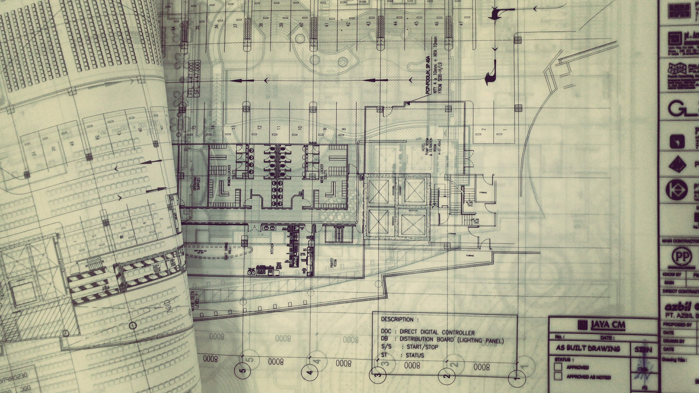

การเขียนแบบและการนำเสนอทางสถาปัตยกรรม(Architectural Drawing and Presentation) คือ การเปลี่ยนแนวคิดของสถาปนิกให้กลายเป็นอาคารจริง โดยแบ่งเป็น "การเขียนแบบ" ที่ใช้เส้นสาย มาตราส่วน รูปตัด และรูปด้านตามมาตรฐานสากลเพื่อสื่อสารโครงสร้างที่แม่นยำกับวิศวกรและช่างผู้รับเหมา ควบคู่ไปกับ "การนำเสนอ" ที่ใช้ภาพสามมิติ แสงเงาเสมือนจริง และวิดีโอนำชมสเปซ เพื่อช่วยให้ลูกค้าเห็นภาพบรรยากาศและเข้าใจฟังก์ชันใช้งานได้ง่ายที่สุด การผสานทั้งสองศาสตร์นี้ด้วยการเล่าเรื่องอย่างเป็นระบบ ตั้งแต่การวิเคราะห์พื้นที่ไปจนถึงงานดีไซน์สุดท้าย จะช่วยให้โครงการก่อสร้างประสบความสำเร็จและตอบโจทย์ได้อย่างสมบูรณ์แบบ